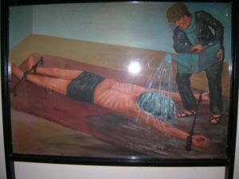

He was tortured, too: Our Lord was "scourged," which means that He was turned over to the ministrations of professional torturers, before being sent to the cross. And of course, crucifixion itself was a method of state execution through torture.
Jailer: Do you believe in anything?
Prisoner: I believe in Allah.
Jailer: But I believe in torture, and I will torture you. --
An exchange between an Iraqi detainee and his American captor in Baghdad's Abu Ghraib prison.
During a call-in radio program broadcast in Moscow in the mid-1980s, the host -- a Communist hack who displayed nearly Hannityesque servility toward his party masters -- got tangled in his talking points.
At one point in his peroration, the Party mouthpiece insisted that the decadent West "stands on the brink of collapse"; shortly thereafter, he pronounced the glad tidings that the Soviet Bloc "is about to overtake the West!"
A few minutes later, a listener called in to pose an earnest but puzzled question. "Comrade, you said that the West is on the brink of collapse, and you also said we're about to overtake them," the caller observed. "But doesn't that mean...?" The question trailed off into an awkward silence as the host suddenly understood that the term of his accidental syllogism would be that the Soviet Bloc would collapse before the decadent West.
Over the past two weeks, the leading voices of Republican conservatism have caught themselves in the coils of a similar snare.
A fortnight or so ago, GOP-aligned pundits and activists let loose a protracted communal howl of outrage prompted by disclosure of a Department of Homeland Security assessment identifying "rightwing extremism" as a potential breeding ground for domestic terrorism. Much of the indignation was purely theatrical, of course with folks like Rush Limbaugh and Pat Robertson preening as supposed victims of official persecution.
Immediately after laying claim to the status of innocently accused terrorist suspects, the same retinue of Republican hacks -- without breaking stride, mind you -- redirected their energy into the defense of torture as a means of interrogating terrorist suspects.
The time-frame in which this turnaround took place shouldn't have over-taxed the attention span of the typical talk radio addict, and the implicit logic of these positions should have been obvious even to people habituated to reflexive sloganeering, rather than ratiocination.
Yet there it is: In defending the atrocities committed by the Bush administration, the Republican-centered conservative movement effectively endorsed the proposition that it is entirely proper for the government to torture terrorist suspects -- including, presumably, "rightwing extremists" deemed a domestic terror threat by the incumbent government.
This irony is reinforced by the fact that the Bush/Cheney wing of the conservative movement champions the use of torture techniques that were devised by Soviet and Chinese Communists for use against American military personnel, as well as one particular method -- controlled drowning, also known as "waterboarding" -- that was favored by Cambodia's hyper-murderous Khmer Rouge.

It didn't work then, either: Waterboarding as carried out by U.S. and allied troops in Vietnam.
Twenty years ago, as the Soviet Empire began to implode, many people -- myself among them -- objected to the fact that the term "conservative" was routinely used in the media to describe the most doctrinaire elements of the Communist Party.
The remnants of the Republican-centered conservative movement appear determined to vindicate that useage as they rally in defense of the Leninist principle of unfettered state power vested in an executive oligarchy, and the practice of torture as the defining privilege of that ruling elite.
One of the brightest luminaries in the conservative blogosphere insists that any effort to prosecute Bush administration officials for ordering and carrying out torture is nothing less than an effort "to criminalize what are essentially policy differences."
Ah, yes, of course: When crimes are committed by governments, they are magically transformed into "policy." So when a Republican administration institutionalizes the use of torture techniques that were prosecuted as war crimes following WWII, we're to believe that those crimes were sanitized through the redemptive power of the executive branch.
Some of the more sophisticated members of the GOP's PR apparat -- for instance, attorneys David Rivkin and Lee Casey, who served in the first Bush administration and defended every expansion of presidential power under Bush II -- took a Baghdad Bob approach (that is, brazen, defiant denial of the obvious) in dealing with recently disclosed memoranda and other documents relating to the Bush administration's torture program.
Following the document dump, Rivkin and Casey blandly insisted that "The Memos Prove We Didn't Torture" because, inter alia, the illegal "enhanced interrogation" methods used by the CIA weren't carried out to the uttermost extremes permitted by "policy." (This reminds me of Cicero's ironic observation in one of his Philippics that the tyrant Antony occasionally refrained from murdering people, then demanded honor as a humanitarian for sparing their lives.)
Besides, Rivkin and Casey continue, the use of "enhanced" interrogation techniques (which is exactly the same phrase, translated from the German, that the Nazis used to describe exactly the same methods) saved us from a post-911 "second wave" of terrorist attacks.
For example, the repeated waterboarding of al-Qaeda thug Khalid Sheik Mohammed supposedly helped abort a plot involving "the crashing of another airplane into a building in Los Angeles." The inclusion of that detail demonstrates the patent dishonesty of Rivlin and Casey's argument (an old Bush White House soundbite that was also regurgitated by former Bush speechwriter Marc Thiessen), since Mohammed wasn't captured until more than a year after the supposed plot to bomb L.A. was foiled.
It is now clear to the point of being irrefutable that the origins of the Bush administration's torture program had nothing to do with protecting the United States from al-Qaeda terrorist plots. Instead, the objective was to compel detainees to provide "confirmation" of a supposed operational connection between Saddam's regime and al-Qaeda, thereby forging (in the sense of "fabricating") a link to 9-11 that would offer a pretext for the war Bush and his handlers plotted even before they were settled in at the White House.


How the Khmer Rouge did it: Waterboarding as practiced by the murderous Cambodian Communists.This is an entirely appropriate -- which is to say, Soviet-inspired -- use of torture. As a method of extracting reliable intelligence, torture is notoriously ineffective and counter-productive. But it is a splendidly effective way to extort false confessions from victims.
As employed under Stalin, the Soviet methods that inspired Bush's torture program were intended to ratify the policy decisions of the ruling elite, not to acquire objective intelligence that might contradict the designs of the Dear Leader and his comrades.
Vladimir Bukovsky, the heroic former Soviet dissident who was sentenced to the psychiatric gulag in the mid-1960s, warned in 2005 that institutionalizing torture would corrupt and ultimately ruin whatever law enforcement or intelligence body carried it out. It would cultivate an entire population of professional torturers, individuals whose work requires them to emancipate the worst elements of human nature for use against the helpless.
Not mentioned by Bukovsky, but becoming apparent now, is the damage that a program of torture can do to principled people who refuse to carry it out.
The suicide of Army Spec. Alyssa Peterson, which I described nearly three years ago and is receiving renewed attention now, was her desperate, despairing reaction to orders that she participate in the torture of detainees in Iraq. The Pentagon reacted to her death by carrying out the now-expected cover-up, which included destroying all of the critical records of the "interrogations" she refused to participate in.
Like others in the employ of governments throughout history who rebelled at carrying out the order to torture other human beings, Spec. Peterson was able to recognize that even the enemy is made in the image of God. Torture is the repudiation of this idea of shared humanity; it treats the victim as something to be molded, through pain and terror, into a shape more compatible with the State's designs. But that process inevitably re-shapes those who carry out the torture as well.
The torture regime created under Bush and Cheney implicated the political leadership in both branches of the Ruling Party. Its infection has deeply penetrated the tissue of the Homeland Security system. It has created what could become a self-sustaining corps of professional torturers whose depraved talents will not be employed only against foreigners, but will very quickly become "policy" in dealing with certain troublesome elements among the citizenry as well. That corps, incidentally, includes a large number of medical professionals who -- in a collectivist perversion of their Hippocratic obligations, collaborated in the torture of detainees -- including, God forgive us, children who were seized in order to gain blackmail leverage over a parent.

In a profoundly sobering essay published by Foreign Policy, former Bush administration National Security Council member Philip Zelikow points out that there simply is no legal firewall protecting U.S. citizens from the torture methods used against foreign terrorist suspects.
Referring to the series of legal memoranda issued by Jay Bybee, John Yoo, and others in the Bush administration's Office of Legal Counsel, Zelikow observes: "Once you get to a substantive compliance analysis for `cruel, inhuman, and degrading' you get the position that the substantive standard is analogous to U.S. constitutional law. So the OLC must argue, in effect, that the methods and conditions of confinement in the CIA program could constitutionally be inflicted on American citizens in a county jail."
"In other words," he concludes, under the official assumptions embedded during the Bush administration, "Americans in any town could constitutionally be hung from the ceiling naked, sleep deprived, water-boarded, and all the rest -- if the alleged national security justification was compelling."
During the Cold War, there was never any realistic prospect that the Red Army would conquer the United States. In much the same fashion, it is entirely inconceivable that Sharia law will be imposed on Americans any time in the foreseeable future.
But owing to the triumph of totalitarian "conservatism" during the Bush era, it's all but inevitable that, in the near future, innocent Americans who fall into the hands of their own government will be subject to Soviet-style "enhanced interrogation" techniques. It turns out that the United States did indeed "overtake" the Soviets after all.
Obiter dicta --
For those who are interested, I've been regularly submitting items over at Lew Rockwell's blog. Please check out the Liberty Minute archive, as well.

On sale now.
Dum spiro, pugno!
24 comments:
One thing the proponents of torture repeatedly forget is this:
If we adopt the behaviors of the "enemy" we are no different from the "enemy."
Dave - Erstwhile Urban Wanderer
Another excellent offering, Will. Your opening arguments touch on why I was reticent to be a part of the tea parties. First of all, the concept was entirely hijacked from a group legitimately concerned about the ever-growing United State by those who only worry when the brand name changes. They -- the Republicans -- can't hit a high enough octave in their praises of the "country" (i.e. government) when their man is in office, yet they become entirely apoplectic when a Democrat siezes the dictatorship that is the executive branch.
Also, to your overall point about torture. I'm reminded of what my grandfather, a poorly educated and dyed-in-the-wool Democrat, said the other day. I think he summed it up best when he averred, "That's wanting a paycheck pretty bad." As you said, there are others involved in the process of torture such as doctors and translators who are merely trying to put food on the table. If that's the case, they would do better to starve to death, along with their families, rather than suffer in hell with a satiated appetite. Do they not realize that most likely many human traffickers offer the same excuse a la Saint-Claire in the 2008 film, "Taken"? Are these people any different from Saul when he held the coats of the mob that stoned Stephen in the book of Acts? Simply unimaginable.
The difference Derek, is that Stephen was not a mass-murdering pukebag, nor was he accused of being one or having that intent.
The only--I repeat: only--problem I have with the use of torture to defeat and obstruct those who are intent on killing as many of us as they can has to do with the possibility of error and hence, the potential torture of innocent people. The torture of innocent people. I have no problem whatsoever with the torture of those bent on evil, who brag about their intent to murder tons of truly innocent people. Such men have sacrificed their right to consideration of their innate human dignity by their refusal to respect that right in others. These are not innocent babes in the womb we're talking about here. They're grown men with wills firmly fixed on evil.
However, as I said, the potential for error must give us some pause.
James the Least,
Why would you trust the FedGov to determine exactly who are those who are determined to kill innocents? So far, IT is the group most determined to kill innocents, willing to destroy entire families to get a single suspected terrorist.
The ONLY freedom the FedGov is interested in continuing is its own freedom to tax, inflate and dominate others. What privileges the FedGov allows us to retain are a means of placating us while it strengthens our chains.
It is a matter of faith that all foreigners are ab initio insane, and their dislike of the United Sates is proof of their insanity (it is official doctrine now that anyone within its borders who dislikes it is a terrorist). It absolutely couldn't be that terrorism is a response to the FedGov's continual interference in the affairs of others and the FedGov's military domination of the entire earth.
It isn't the case that the FedGov was here within its borders minding its own business when for no reason terrorists attacked civilians here. The FedGov routinely attacks civilians around the world, and that has gotten only worse since the FedGov invaded Iraq and Afghanistan. We may expect the rest of the world to "lay back and enjoy it" but I suspect the rest of the world is a little less sanguine about that plan.
Your observations concerning the Limbaugh/Robertson wing of the State Party with respect to rightwing extremism and the necessity of torturing terrorist suspects put me in mind of a quote I've seen attributed to William Shakespeare, "I would challenge you to a battle of wits, but I see you are unarmed!" Goodness gracious sakes alive, how do these people even manage to dress themselves without help?
John Yoo, one of the legal architects of the Bush Administration's "torture policies," was met with outrage at a talk given at Chapman University in California Tuesday, where he reportedly faced cries of "war criminal" as he approached the stage.
As he neared the podium to speak, he was met with shouts of "war criminal," the local newspaper said. An audience member shouted, "He doesn't belong in the university – he belongs in jail."
The former Bush legal adviser seemed immune to the haranguing.
According to the Orange County Register, "Yoo responded with a slight smile."
"Maybe you all should conduct the debate," he quipped. "I'll write questions on cards and hand them in."
Yoo worked at the Bush Administration's White House Office of Legal Counsel, which authored the recently released CIA torture memos that outlined the methods interrogators could use when questioning suspects. He was participating in a debate with other professors over the "harsh interrogation" practices the Bush team approved.
In his talk, he defended the Administration's use of waterboarding, a technique in which detainees were partially drowned.
"Three thousand of our fellow citizens had been killed in a deliberate attack by a foreign enemy," he told a crowd at Chapman University. "That forced us in the government to have to consider measures to gain information using presidential constitutional provisions to protect the country from further attack."
Chapman law professor Katharine Darmer seemed troubled by Yoo's defense. She asked him why it was necessary to waterboard two suspects -- including the alleged architect of the 9/11 attack -- 266 times.
"How effective is a tactic you have to use 266 times? We are lawyers," Darmer said. "Our job is to follow the law. Torture is illegal and it's also wrong."
Yoo replied: "What I hear from Prof. Darmer and Prof. Rosenthal is that they would, in the same circumstance, rule out any form of coercive interrogation no matter who we help – including and up to Osama bin Laden – no matter what the circumstances."
"Was it worth it?" he added. "We haven't had an attack in more than seven years. Fifty percent of the information that we have on al Qaeda and its workings came from interrogation."
Jim,
Thank you for your comments.
I happen to agree with you that we have aggravated lots of people around the world and we are now reaping some of what we've sown. However, I do not agree that everyone who wants to do us harm is acting from such motives of revenge. You can dodge the torture question now if you want, by saying it should never have even come up, but what are you going to do when an enemy we didn't invite attack from commits the same acts against us? Now what principle do you base your opposition to torture on? Or are there no bad guys and that would never happen?
from 10:37 AM
"Was it worth it?" he added. "We haven't had an attack in more than seven years. Fifty percent of the information that we have on al Qaeda and its workings came from interrogation."
--and the other 50% comes from them spending 40 billion taxpayer dollars a year on. To spy on a bunch of Muslims living in the desert. How lucky our leaders are that the American people do not think.
Mr. Grigg,
My beloved mother died in 1984 at the age of 79. I still miss her, even now. I swear on her grave and on the peace of her soul, that what follows comes from what I consider a reliable source, who in turn claims to have received it from a contact in the Turkish Interior Ministry. I am told by my correspondent that the source in Turkey said that this report had been sent out to many recipients, including the US government and the US media, but that nobody would touch it, or even respond.
According to my source, his source in Turkey said that they believe this is not an isolated case, but that the Interior Ministry has received reports that HUNDREDS of people were tortured and murdered in Poland, whose government was very close with the Bush regime. I cannot venture to say if there were other locations than these two, but it seems probable to me.
Here is the Turkish report verbatim. I have changed, added or subtracted not a single word, except for the word [medical] which I have inserted:
“On March 27, 2008, two teams of agents from the Turkish Ministry of the Interior, acting on information received from a foreign intelligence agency, conducted a heavily armed raid on a house in Balikesir. In addition to the reports of the existence of this house, the Ministry also had growing reports from local citizens about loud screams issuing from the building for “many weeks previously.” Ministry officials were able to capture six American citizens, all of whom claimed to be members of the USIA, a known branch of the CIA. Taken as evidence were many papers and documents that showed with great clarity that this house had been used as a CIA torture and murder house. Quantities of blood taken from drains are shown to have belonged to over thirty people. Also found in the house were eleven Turkish children from ages three to ten, six girls and five boys. All had been drugged and [medical] reports indicated all the children had been sexually abused for some time. Arrested were: Kenneth A, Myron G, Timothy MC, Robert A, Jacob Z, Arthur C and three Israeli citizens identified as Aaron R, Efram T and Yitzak Y. The Americans claimed diplomatic immunity and admitted only to being USIA officials. The Israelis were also stated to be of the Israeli Mossad intelligence agency. The Ministry ascertained that none of the men had diplomatic immunity and although the U.S. Embassy protested, the Foreign Ministry declared all persons as persona non grata and ordered out of Turkey within a 24 hour period. All confiscated documents remained with the Ministry for further investigation Evidence found in the murder house included many torture devices, whips, cattle prodding electric devices and many ropes, shackles and other restraining devices. Also found in the murder house were a number of cameras and many films of naked children being sexually assaulted and, in one case, killed with a garrote. Subsequent investigation by Turkish authorities disclosed that the passports of the Americans were all fakes."
Mr. Grigg, I swear, at risk of my eternal soul, that the above is exactly what my correspondent says he received from his contact in the Turkish Interior Ministry. Your readers should know that what we have heard so far in this country is not even the begining of the tip of an immense iceberg of inconceivable horrors, which would chill the soul of anyone with even a drop of humanity in their veins.
The evils of the Bush Republican administration and the agencies they controlled would appear to be as bad, or even worse, than anything the Nazis and their horrendous camp doctors, such as Josef Mengele, were accused of. Note the child "snuff" pornography movies, which sick abomination was unheard of in the comparatively innocent days of the Nazi regime. At least the Nazis had SOME moral standards in their crimes.
And also note that our delightful blue-eyed boys at the CIA, Ivy League graduates all no doubt, fresh and blond and wholesome specimens, the finest of All-American youth, (Heinrich Himmler would have found them just his type,) were not alone in this, but were assisted by the Israeli Mossad. Surprised? I have said on this blog before, that the CIA is completely controlled by the Mossad, who know ALL our secrets. If the Israelis could use helicopter gunships and phosphorous shells against schools and hospitals in Gaza, and literally thousands of cluster bombs ( all supplied by W. Bush and C. Rice) against civilians in Lebanon, child snuff pornography would be a picnic to them. Perhaps they were making interrogation training videos - a man will say anything when he sees his naked children being raped and murdered.
Now, I have no doubt, all your readers will shriek and rant at me for being an anti-Semite. This is par for the course these days - just whisper one mild word of doubt against Blessed Mother Israel, or anything they do, and howls of rage and shrieks of fury arise, labeling you a vile Nazi who wants to exterminate the Jewish race all over again. NOTHING done by any Jew anywhere in the universe can ever be questioned.
Or done by any Republican, for that matter - just ask Rush Limbaugh, Bubba O'Reilly, or Dick Cheney. (A mass murderer and war criminal who makes Benedict Arnold look like a saint.)*
* Let Mr. Cheney sue me. I would LOVE to stand up in open court and announce to the world my reasons for that statement. Please, Asswipe Cheney, you spawn of Satan, if you read this - go ahead. I beg you. At least, you can no longer "disappear" me to Istanbul, you filthy little maggot.
I guarantee it will never happen.
This is not a nice world. Mr. Grigg, I am really afraid. I am not just saying this for effect, unlike some of the above comments. Since I believe in God, I live these days in dread. How long will it last, before the entire human race suffers a scourging for its horrific sins? Remember the words of Jesus: "Inasmuch as you did it to the least one of these, you did it unto me."
There is nothing more I can say.**
Yours in profound despair,
Lemuel Gulliver.
** No. Let me say this: Some of your correspondents say things like "...they become entirely apoplectic when a Democrat siezes the dictatorship that is the executive branch." - Derek, Mr. Grigg, and all your co-ranters, you have no idea what you are talking about. Fall to your knees right now, sir, and thank our merciful God with all your heart that the latest puppet McCain did not win the Presidency. He would have been dead within a year, by natural causes or not, and that black and evil witch Palin would have been your President. Had you then opened your mouth on this blog, you might have ended up as a puddle of slime down some drain in Istanbul. I do not believe that is likely to happen any more, now that our "dictator" (sic) is Obama, otherwise I would not have dared to say what I said above.
-Gulliver.
No. No. I cannot let this pass. I have just read what "Democrats & Rethuglicans" wrote:
"In his talk, [John Yoo] defended the Administration's use of waterboarding, a technique in which detainees were partially drowned. "Three thousand of our fellow citizens had been killed in a deliberate attack by a foreign enemy," [said Yoo.]"
Motherfreaking bullshit. The Mossad had infiltrated the Mohammed Atta cell in Florida. They knew exactly how, when, and where the attacks would take place. THEY TOLD THE BUSH ADMINISTRATION IN DETAIL ALL ABOUT IT. On instructions from Cheney, the Mossad gave Atta & Co. disinformation so they would circle their plane right around and fly into the empty side of the Pentagon. The German BND warned them. The Russian FSB warned them. The British MI6 warned them. Cheney, Rumsfeld, Rice, Libby, Addington, and Bush chose to sit on their hands and do nothing, but just let the attack happen. The evidence is overwhelming. Cheney wanted to seize the vast oil reserves of Iraq and dole them out to his oil industry friends. Bush wanted to be a wartime dictator and hero - probably saw a Bush memorial some day in Washington next to Lincoln Memorial and the FDR Memorial. Addington, Liebowitz (Libby), etc. saw the opportunity to destroy Saddam Hussein, which they wanted so bad they could taste it, which was supposed to be followed by war on Iran and Syria. All for Eretz Y'Israel. These people are NOT just torturers. They are accessories before the fact to the mass murder of almost 3,000 Americans, and war criminals for waging an illegal war in Iraq against a country that had never done anything or said it would do anything or was capable of doing anything to the United States. Over 4,000 additional American soldiers, 1,300 contractors and nearly a miilon Iraqi civilians have died for the insane dreams of this criminal gang, and over 60,000 American servicemembers have been maimed for life. And what has been achieved by all this murder and evil? Absolutely NOTHING. Except helping to plunge the world into an economic collapse.
God damn it all to hell. I am sick of the bullshit that passes for news and opinion in this Godforsaken excuse for a "country." Everything they tell you is a baldfaced bloody freaking LIE, do you get that? A LIE. A LIE. A LIE. Get it? A LIE.
I have to go get me some coffee.
- Gulliver.
James the Least,
Thanks for the discussion. Please excuse this sideways answer to your point.
There are actions I might take as an individual against someone attacking me or my family which are not available to a government simply because I can be held immediately and personally accountable for my actions which are directly attributable to me. The levels of indirection in a government make this impossible as a practical matter. So, while if I see someone abduct my son and later find that person, I might use extraordinary methods to find out what happened to my son, I would then pay the penalty for doing so as judged by my peers. If I were to torture the wrong person my life would be forfeit as a result as this would be unprovoked aggression of a terrible nature against an innocent. I can't grant myself immunity.
The State decides who to torture, then decides how it will (not) punish itself and its minions for doing so. The danger of a State so liberated far outweighs the danger of _any_ external enemy by orders of magnitude. Have we seen any high level decision makers swinging from yardarms for authorizing torture on innocent people?
The most lenient pragmatic argument I can conceive of for allowing State sanctioned torture fall short of being "worth it".
Then we get to the moral arguments...
PS: I am calmer now.
One more thing. This will make you quake in horror when you hear it. The 9/11 attack plan was never fully realized. Give eternal thanks to the unknown passenger heroes on United Flight 93 which crashed in Pennsylvania. Had that plane not been brought down by the passenger revolt, it was destined to fly into the Capitol (which historic building Cheney cared not one whit about - probably figured his pals at Halliburton would get the contract to rebuild it.)
Do you see yet where this is going? If the Capitol was hit and half the Congress was dead, together with hundreds of aides and staff, what better excuse could there ever be, for the President to declare a suspension of Constitutional government and a unilateral seizure of power by the White House?
Can you see NOW why the Bush gang let the attack proceed?
....So you think you had it bad the last 8 years? Torture? Murder? War? Hah. Little did you know how lucky we all were.
Give thanks to God for our unsung, unknown heroes. Those passengers on United Flight 93 alone saved America for your children. Did you know that?
- Gulliver.
PS: And how do you figure the authorities had the names of all 19 hijackers AND their photos just 2 days after the attacks? When they had been all unnoticed (Imagine that!!) in this country, and in the phone book, some of them, and with drivers licenses and bank accounts, for MONTHS prior? (And how the Easter Bunny brings all those chocolate eggs?) The vile sons of bitches had the photos and names BEFORE the attacks. That is how.
James the least
you cannot torture another human being because it is an affront to human dignity. it is coercion of the will. not even God himself will coerce your free will.
check this article out
http://www.ajustsociety.org/press/forum.asp?nav=publications&cjsForumID=1069
Jim,
I have no problem at all with punishing government officials who make mistakes which are judged to be culpable by a citizen jury. In fact, I consider that an absolute necessity for the maintenance of liberty. Are you saying that having such a law or system (I don't know exactly what's in place right now with regard to the CIA) is impossible? Because otherwise, your argument isn't universal, but only applies to our situation as it stands right now. Am I missing something in what you said?
As for any moral arguments, go ahead and present them. I already addressed Will's "inherent human dignity" argument by asserting that a man who commits a mortal sin or crime against his fellow man has in that degree sacrificed his inherent human dignity by and in not respecting that of his victims. If you disagree with that, please feel free to say why.
If the fedgov was constitutional, adhering to the tenets of the document that LIMITS, not enhances, its power, the U. S. would NOT be in nearly every country of the world demanding others be like us and killing/maiming those who would prefer to live their lives as they see fit. We know our presence is a good thing, though, and those pesky citizens of other countries who would prefer their own way of life have to be taught, one way or the other, that they are to be just like us. If they act up, why they are simply "terrorists" who must be tortured for info before they are liquidated.
Since the fedgov does everything it does today in a manner that is unconstitutional, rendering it illegal, why should we be surprised that such an illegal state does illegal things like waging aggressive war, torture and increasing tyranny at home? What has been instituted at airports by the "defenders of freedom" gives an example of how an illegal regime treats its own citizens. Do you actually think the airports are the end of such federal heavy handedness here at home, or is it just the beginning? As the federal apparatchiks handle we, the chumps, as they do, just try to imagine how foreigners are treated in their own countries by different appartchiks of the same regime ruling us at home, but with no pesky constitution to protect those foreign citizens from the depredation. Do you think this makes us friends or enemies?
In the end, the regimes do what the people allow them to do and ignorance by the populace does not absolve that populace of being held responsible for the actions of the various regimes that have illegally invaded other countries and tortured its citizens. All with good reasons, of course.
The route we have taken - world hegemony - cannot be done without many crimes being committed. History reveals such crimes are ultimately punished, usually in a very severe manner. I am not sure this is what we want, but, in the end, will get, ignorant of the actions of our govt or not.
James the Least,
Neither you nor I have problems with punishing government officials, but the nature of reality is that it doesn't happen. Nobody fried for Waco. Nobody fried for Ruby Ridge. Nobody fried for the internment camps. Nobody fried for the massive slaughter of non-combatants in Japan or Germany. Nobody fried for Abu-Ghraib. Nobody fried for involving the US needlessly in WWI (lying us into that war). Nobody fried for stealing all of the US people'slawful money from them in 1933. Nobody fried for ripping off our trading partners in 1971. Nobody will fry for the government's theft of funds in the last year.
Limited State is impossible for any length of time because the limited State is still the monopolist of decision making and therefore it has the "home field advantage" in any dispute. The incentives are for it to provoke conflict then decide in its own favor, giving just enough to the other side to keep people from figuring out the game is rigged. As people become acclimated to the State having more and more power it can take more and more.
The universal is that a State (as a territorial monopolist of decision making) is inherently uncontrollable. Non-state government is not, as non-state government happens all of the time. Unfortunately the State has convinced us that there is no government without it.
James the Least,
Even if one performs an inhuman action, it does not deprive the person of his human nature, which has an inviolable intrinsic dignity.
Let us, for a moment, not look at how torture is an attack on the humanity of the tortured person: look what it does to the torturer.
Do you think Jesus, who was scourged and crucified, would ever approve of torture? When a man dies who filled others with the terror of imminent death, who made them scream for mercy, who subjected them to hypothermic and intensely hot environments and ear-shattering noise, when such a man appears before the judgment seat of Christ, do you think he will say, "Well done, my good and faithful servant?"
You mention "mortal sin." Do you claim to be Catholic? The Catholic Church condemns torture. If you approve of torture, you are not a Catholic, you are a heretic.
-Sans Authoritas
People turned to the liberal party to save them from Bush's conservatism. What they didn't consider was that all of the questionable things Bush did weren't conservative-in any way, fashion or form. Liberals are (supposed to be) the party of big government, and big governments are responsible for more suffering than probably anything else on earth. Bush wasn't a conservative, and those who identify themselves as conservative shouldn't be assumed to be supportive of Bush. We have every right to fear Obama's intrusive government as much as Bush's.
Sat down with two gentlemen yesterday and during our brief conversation one of them asked whether I paid much attention to the news and I replied that I hadn't because it's all propaganda. He asked myself and another "who do you trust then?" (in so far as media/government is concerned) to which we both echoed, "nobody". That's why anything coming out of the mouths of government aparatchiks is to be dismissed immediately for the "tortured" lies that they are.
If anyone is still reading this posting and is interested in the role of the ass-kissing MSM, especially O'Reilly, Blitzer, and their friends, in spreading government propaganda.... Here is an article in Salon.com which details the many times the MSM (all except Keith Olbermann) parroted official lies about torture:
http://www.salon.com/opinion/greenwald/2009/04/28/ross/index.html
Have fun reading it.
A couple of comments.
Lemuel Gulliver, I fear that your source is full of $hit and the 'report' you posted verbatim is typical of the phony reporting that tends to come out of Muslim nations. For one thing, the USIA was shutdown in 1999, two years before September 11th and years before this phony report, therefore documents purporting to support the CIA torturers cover as working for USIA is impossible. Secondly, the gratituous use of children being raped in the story is a staple of the Muslim street designed to inflame the passions of the masses to extract revenge. I am NOT saying, however, that the CIA has not tortured and performed extraordinary renditions, just that this purported report of yours is completely and verifiably phony.
Mr. Griggs:
You fall into the same trap that many people do when you state that information obtained under torture is unreliable. This is a false premise. Some information may be unreliable, but that is irrelevant. As an interrogator facing a hostile subject, your primary objective is to catch him in his first lie. Once you have demonstrated that what he has told you is patently false, it starts breaking down his resistance quickly as he (from his perspective) sees you becoming more omnipotent, seeing through his lies. Your link to the FBI op-ed piece in the NY Times is informative, but Ali also falsely states that the information "could have been gotten by conventional interrogation." Ali has absolutely no way to prove that to be true. The only way to be certain is if the subject had given up the information to Ali, which he did not.
Having gone through SERE (survival, evasion, resistance, escape) school, I can assure you that most of the "enhanced" interrogation techniques are NOT torture. I do agree that waterboarding and beating someone is. However, I don't think sleep deprivation designed to break the subject's natural circadian rythym is torture (maybe it is, if you have a newborn, you'll know what the sleep deprivation cycle is like); however, it is useful in lowering the natural resistance of the subject as well as slightly befuddling his thinking processes so he might slip up in the interrogation phase. Many of the other techniques (like sitting in stress positions, being required to stand for hours at end, etc.) are not designed to torture or create physical punishment at all. Instead, they are designed to psychologically place the subject in sub-servile role. By correcting them when they fail to maintain the correct posture/position, you are reinforcing the interrogators psychological dominance over the subject, not causing him severe pain or even discomfort.
Like I said before, I don't condone torture (and I agree drugging, waterboarding and beatings are torture), but I think we have to be careful about calling any interrogation that causes some stress on a subject 'torture.'
At 9:53 AM, tazman said...
1/ look at the first comment on this thread, by daveeriqat:
One thing the proponents of torture repeatedly forget is this:
If we adopt the behaviors of the "enemy" we are no different from the "enemy.".
2/ why do you want to be the enemy?
3/ what gives you the right to interrogate me? by what right do you demand that I cooperate in your effort to find out what I know?
4/ what is the difference between you and a "gangbanger" when you tell Will that some things are torture and others are not?
5/ how did you miss the main point of this column?
mongol Doc Ellis 124
Doc Ellis said...
1/ look at the first comment on this thread, by daveeriqat:
One thing the proponents of torture repeatedly forget is this:
If we adopt the behaviors of the "enemy" we are no different from the "enemy.".
Where in the posting did I say we should adopt the behaviors of the "enemy?" I think I clearly articulated that I did not condone torturing anyone.
2/ why do you want to be the enemy?
You lost me here? Where did I say I wanted to be the enemy? By trying to differentiate between what torture is NOT?
3/ what gives you the right to interrogate me? by what right do you demand that I cooperate in your effort to find out what I know?
I have the right to interrogate you or anybody else, but you have the right to ignore me or tell me to go away. It's called having a discussion and asking questions. Hence, the term 'interrogatory' has the same meaning as 'question.'
Ironically, though your question implies that you don't think anyone has the right to interrogate anyone else, it sure seems like you feel the right to interrogate me by posting these questions; I will admit though, that I am responding to this interrogation freely and voluntarily.
Even in the absence of any form of parasite known as the 'law' or 'public servants,' anyone has the right to interrogate anyone about any subject they please. The difference is whether or not you have the monopoly of force to deprive someone of their ability to not participate. This monopoly of force is theoretically granted to, as Will so graciously labels them, "parasites in state issued costumes," when someone has demonstrated violence or deprivation of another person's property. That the 'state' oversteps their bounds in this area is a given and why I enjoy Will's posts of these oversteps.
4/ what is the difference between you and a "gangbanger" when you tell Will that some things are torture and others are not?
I'm not sure how "gangbanger" and engaging in a discussion about what I believe constitutes torture versus what other people believe have any connection whatsoever. To me, it's an insipid way (along with previous questions like "why do I want to be the enemy" )of trying to tarnish my reputation and intent by association with deliberately negative labels. Perhaps you missed the class in basic logic where an argument that relies on association as proof is a priori a rejected argument. Ditto for the ad hominem attacks littered throughout your response to my posting.
5/ how did you miss the main point of this column?
I didn't. I think you missed the whole point of my post. All I was trying to point out is that many of the activities painted as "torture" are really not torture.
I certainly think that Will's point that the state, when they seize the unconsitutional power to unlawfully detain persons without due process is terribly frightening and needs to be addressed. That's why I read his post. Discussions about such postings is the whole reason that Will has turned on comment threads for his blogs, to stimulate discussion.
Nobody has to agree with my assessment on which particular treatments are "torture," but it would be helpful if, when they respond, that they take my discussion and lay out their argument for their beliefs.
Attempted character assasinations are for the weak minded when they don't rely on facts.
Tazman,
I have read and thought about what you wrote. I thought that you are advocating hostile detention and questioning of someone else. I guess I was mistaken. It appears that you were merely warning that opposing torture by labeling mild coercive behaviour as torture undercuts legitimate opposition to torture. My bad.
mongol Doc Ellis 124
Post a Comment